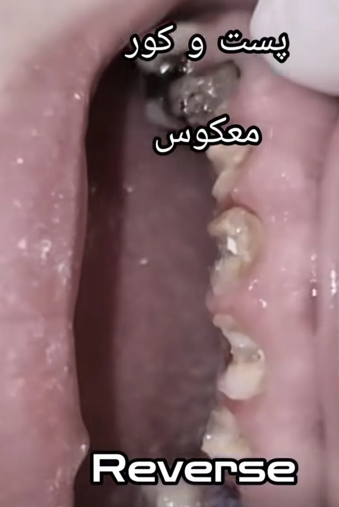
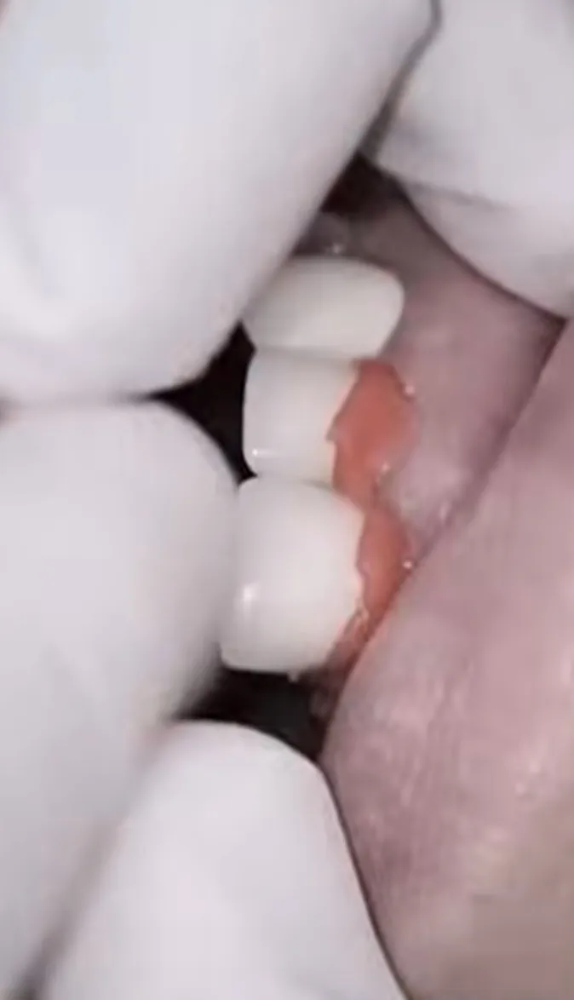
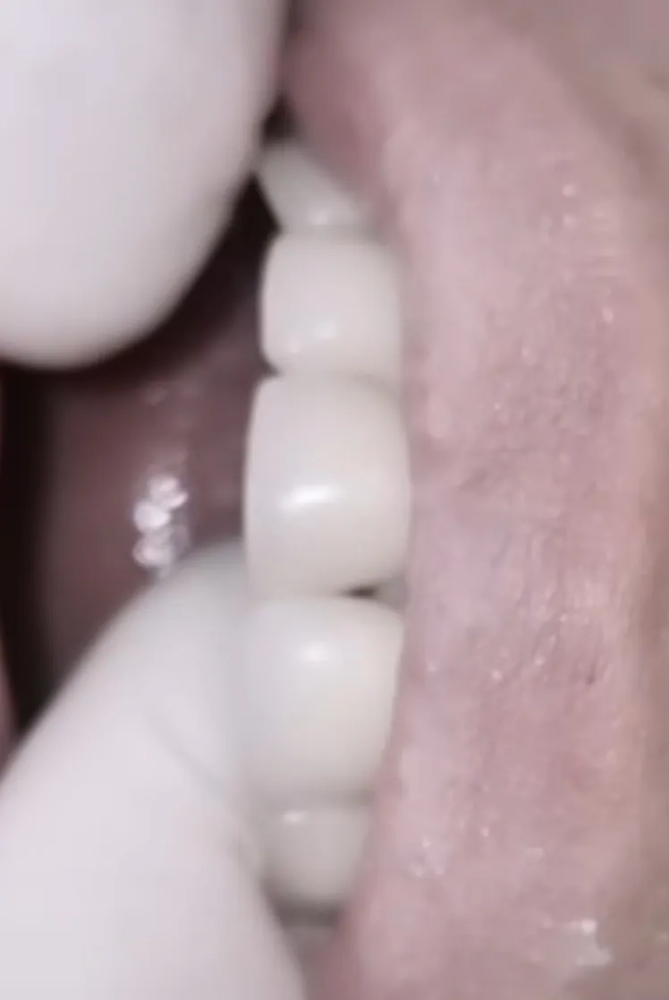
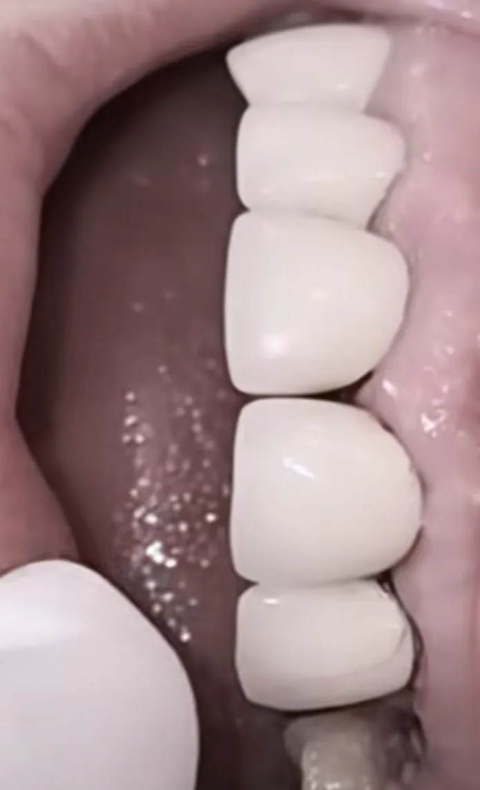

نقد یک کیس اینستاگرامی با پست رتروفیت
در یک ویدیوی اینستاگرامی، کیسی با عنوان «پست و کور معکوس» نشان داده شد. دندانهای قدامی زیر روکشهای قبلی پوسیدگی و تخریب وسیع داشتند. از یک طرف سه روکش متصل روی دندانهای ۱، ۲ و ۳ و از طرف دیگر دو روکش متصل روی دندانهای ۱ و ۲ قرار داشت. درمانگر توضیح داد که بیمار نمیخواهد روکش جدید بگذارد و مارجینها هم سالم است. به همین دلیل روکشها حفظ شدند و برای آنها پست رتروفیت ساخته شد. به نظر من این تصمیم و نتیجهی آن از چند جهت قابل نقد است.

∆ مارجین سالم و دندان تخریبشده با هم جور درنمیآیند
سالم بودن مارجین فقط این نیست که لبهی روکش نشکسته یا جدا نشده باشد. مارجین باید هم دستنخورده باشد و هم تطابق درست داشته باشد. سؤال اصلی این است که تخریبی که در تصویر ۱ دیده میشود از کجا آمده. دو حالت ممکن است.
اگر دندانها از ابتدا همینقدر تخریب داشتند، یعنی روکشها از اول روی دندانهایی ساخته شده بودند که پایهی مناسبی نداشتند. حالا قرار است همان روکشها دوباره به بیمار تحویل داده شوند.
اگر هم معتقدیم دندانها از اول اینطور نبودند و بعداً تخریب شدند، پوسیدگی زیر روکش بدون یک مسیر ورود ایجاد نمیشود. محتملترین مسیر هم همان عدم تطابق در مارجین است.
در هر دو حالت، «مارجینها سالم است» دلیل قانعکنندهای برای نگه داشتن این روکشها نیست.
∆ دربارهی خواستهی بیمار
ممکن است گفته شود بیمار توان مالی روکش جدید را نداشته است. اما طرح درمان مسئولیت درمانگر است و محدودیت مالی بیمار، وضعیت بیولوژیک دندانها را تغییر نمیدهد. این پنج دندان اگر جداگانه و با دقت درمان میشدند، شانس نگهداری بیشتری داشتند. اما با پست رتروفیت زیر روکشهای متصل و بدون دقت لازم، ریسک شکست بالاست و این روند در نهایت به کشیدن دندانها میرسد. در این فاصله هم بیمار با مشکلاتی مثل بوی بد دهان روبهروست.
بعد از کشیدن، مسیر درمان به سمت ایمپلنت میرود. اما بیماری که از ابتدا توان مالی روکش جدید را نداشته، معلوم نیست بعداً بتواند هزینهی ایمپلنت را بپردازد. در این صورت تنها گزینهی باقیمانده پارسیل کلاس ۴ است، یعنی همان درمانی که قرار بود با حفظ روکشها از آن جلوگیری شود، حالا با از دست رفتن پنج دندان قدامی به بیمار تحمیل میشود. محدودیت مالی بیمار نمیتواند توجیهی برای نتیجهای باشد که در انتهای همین ویدیو دیده میشود.
∆ پست رتروفیت، آن هم برای روکشهای متصل

پست رتروفیت فلزی بهشدت تکنیک سنسیتیو است. ممکن است پترن رزینی در دهان تطابق خوبی داشته باشد، اما پست فلزی که از لابراتوار برمیگردد همان تطابق را نداشته باشد. محل اتصال اسپرو روی پترن بعد از ریختهگری باید بریده و پرداخت شود. اگر این کار دقیق انجام نشود، فرم کور تغییر میکند و دیگر با سطح داخلی روکش جور نیست.
یعنی احتمال خطا برای یک روکش منفرد هم بالاست. در این کیس پنج پست رتروفیت زیر دو مجموعه روکش متصل قرار گرفتهاند. هر پست باید دقیقاً در جای خودش بنشیند، و چون روکشها یکپارچهاند، خطای هر کدام روی نشستن کل سگمنت اثر میگذارد. این یعنی خطا روی خطا.
∆ سمان کردن همزمان پست و روکش
درمانگر توضیح میدهد که در این روش پستها و روکشها همزمان سمان میشوند، چون روکشها مسیر و موقعیت صحیح پست را تعیین میکنند. این استدلال فقط در صورتی درست بود که دو شرط همزمان برقرار باشد: پست فلزی دقیقاً کپی پترن رزینی باشد، و پست داخل کانال آنقدر آزادی داشته باشد که روکش بتواند هنگام سمان کردن آن را سر جایش هدایت کند. هیچکدام از این دو شرط در عمل برقرار نیست. پست فلزی بعد از ریختهگری و برش اسپرو کپی دقیق پترن نیست، و پست داخل کانال آزادی ندارد. پست برای یک موقعیت مشخص ساخته شده و باید در همان موقعیت بنشیند. اگر کوچکترین انحرافی وجود داشته باشد، روکش نمیتواند آن را جبران کند و پست در کانال و کور در روکش با هم درگیر میشوند.
علاوه بر این، وقتی دو لایه سمان همزمان سفت میشود، احتمال خطا بیشتر میشود. سمان داخل کانال در برابر نشستن پست مقاومت میکند، و اگر پست کامل ننشیند، روکش هم بالاتر از موقعیت درست قرار میگیرد. در این حالت دیگر نمیتوان فهمید خطا در کدام مرحله رخ داده است.
این مشکل در روکشهای متصل چند برابر میشود. در یک روکش منفرد، اگر پست کامل ننشیند، فقط همان روکش بالاتر میایستد. اما وقتی روکشها به هم متصلاند، کافی است یکی از پستها نتواند سر جایش بنشیند و بالاتر بایستد. در این صورت کل مجموعه از نشستن کامل باز میماند و همهی روکشهای آن سگمنت دچار مشکل میشوند.
∆ آنچه در خود ویدیو دیده میشود

در مرحلهی امتحان روکشها، روکشهای دو سانترال همتراز هستند و بین آنها دیاستم دیده نمیشود.

اما در انتها، وقتی روکشها روی پستها قرار گرفتهاند، بین سانترالها دیاستم ایجاد شده و لبهی انسیزال آنها همسطح نیست. در فیلم همچنین دیده میشود که روکش عملاً لق میخورد.
این همان خطایی است که در بخشهای قبل گفته شد: در مرحلهی امتحان همهچیز سر جای خودش است، اما با پست ریختگی و سمان کردن همزمان، روکشها در موقعیتی متفاوت نشستهاند. نتیجهی نهایی هم یک درمان محدود ولی قابل قبول نیست؛ کاری است که از همان روز اول ایراد داشته.